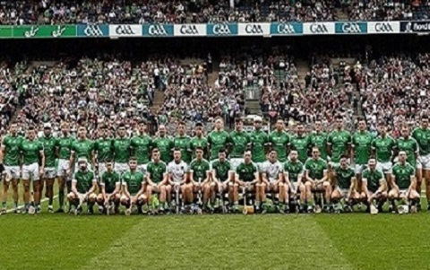
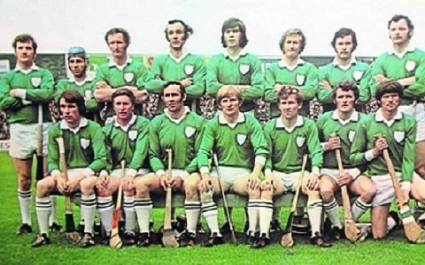
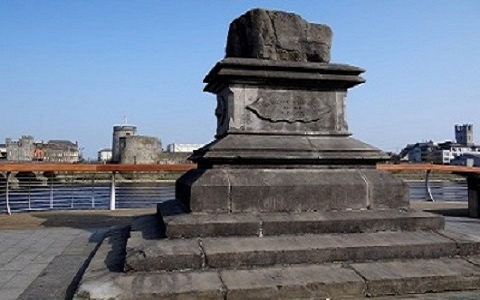

A Celebration of Limerick Hurling

All Ireland Champions 2018

All Ireland Champions 1973

Limerick's Treaty Stone
Limerick is a proud hurling county. In 2018, it recaptured the McCarthy Cup after forty five years. This site takes a look at Limerick's hurling achievements over the years as well as some of the disappointments. Since the 2018 win, the county has won it again in 2020, 2021, and 2022. This 3 in a row triumph is still being celebrated almost 8 months after the 2022 win. Please take a peek at the history of hurling and the GAA in Limerick as well as the trophy list since 1884.